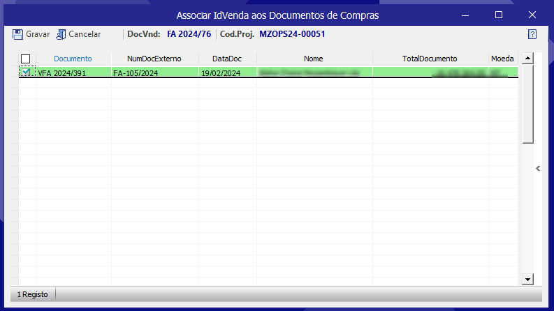

Projeto de Desenvolvimento para Extensibilidade do Programa Primavera
Este documento descreve o projeto de desenvolvimento de um add-on para o sistema Primavera, visando a associação de documentos de venda a documentos de compra com base em projetos específicos.
Objetivo do Projeto
Associar documentos de venda a documentos de compra, garantindo que ambos estejam vinculados a um mesmo projeto. Isso facilitará o controle e a gestão financeira dos projetos, melhorando a rastreabilidade e a integridade das informações.
Propósito do Projeto
O projeto abrangerá a criação de novos campos nas tabelas de documentos de compra e venda, implementação de lógica de negócio para validação e associação de documentos, e a criação de interfaces de Utilizador para facilitar estas operações.
Desenvolvimento de Campos
Os seguintes campos serão adicionados ao sistema:
- DocumentosCompra: Adicionar o campo ControlaVendas (tipo bit)
- CabecCompras: Adicionar os campos ControlarVenda (tipo bit) e IDVenda (tipo nvarchar(100))
- DocumentosVenda: Adicionar o campo ControlaCompras (tipo bit)
Regras de Negócio
As seguintes regras de negócio serão implementadas:
- Ao gravar um documento de compra, se o campo ControlaVendas estiver marcado como verdadeiro e houver uma linha com um projeto identificado, exibir uma mensagem perguntando se a venda referente à compra é obrigatória. Se a resposta for sim, marcar o campo ControlarVenda como verdadeiro.
- Ao gravar uma fatura de venda, se houver uma linha com um projeto identificado, verificar se existem documentos de compra com o campo ControlarVenda marcado como verdadeiro e IDVenda vazio. Se houver, exibir uma mensagem perguntando se deseja visualizar os documentos de compra para associação. Se a resposta for sim, exibir uma grelha com os documentos relevantes e permitir a seleção para preenchimento do campo IDVenda.
Interface do Utilizador
A interface do Utilizador será atualizada para incluir as seguintes funcionalidades:
- Mensagem de confirmação ao gravar documentos de compra e venda.
- Grelha de seleção para associação de documentos de compra a vendas, exibindo campos como TipoDoc, Série, Número do Documento, Número do Fornecedor, Data, Nome do Fornecedor, Valor Total do Documento, e Moeda.
Fluxo de Trabalho
O fluxo de trabalho para associação de documentos será o seguinte:
- Utilizador grava um documento de compra.
- Sistema verifica se o campo ControlaVendas está marcado e se há um projeto identificado.
- Sistema mostra mensagem de confirmação.
- Se confirmado, o sistema marca o campo ControlarVenda.
- Utilizador grava uma fatura de venda.
- Sistema verifica se há um projeto identificado e documentos de compra não associados.
- Sistema mostra mensagem e grelha para seleção de documentos de compra.
- Utilizador seleciona os documentos de compra e o sistema preenche o campo IDVenda.

Conclusão
O desenvolvimento deste add-on permitirá uma gestão mais eficiente e integrada dos projetos no sistema Primavera, melhorando o controle sobre os documentos de compra e venda associados a cada projeto.